Given a polygon 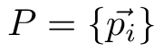, the area of 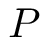 can be computed by iterating over all edges 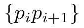 and accumulating the signed area of the triangles 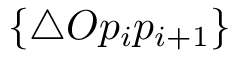. The intuition for why this works is that the signed areas outside the hull (and any overlaps) all cancel out.
The above demo shows this and works as follows: A slider value of 0 shows the net area after all canceling is done. A positive value shows all sample points with at least that positive value, while a negative value shows all sample points with at most that negative value. For the positive and negative values, the contributing edges are marked in red. You can see that even for complex concaves with multiple overlapping triangles, the net result is the interior hull of the polygon.
Proof
We'll use induction to show that this is true. We start with a triangle 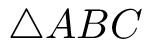. We want to show that
Where the sum is with respect to the signed areas. Notice that the triangles on the right side all use the origin as a vertex. We can think of these as pairs of vectors that start at the origin.
Given any triangle 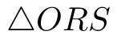 we can write its area in terms of the parallelogram spanned by 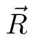 and 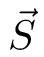
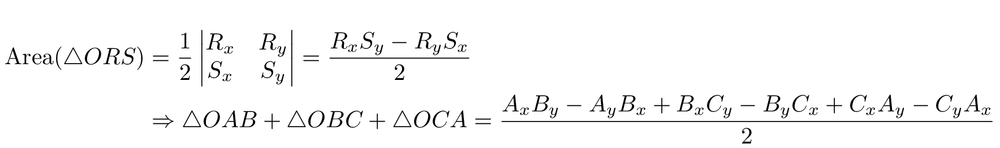
We can compute the area of in the same way if we use 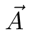 as the origin.
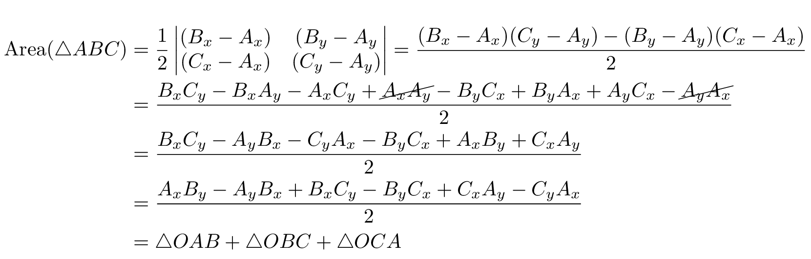
This proves the base case, now assume we have a polygon with 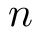 edges such that the area of the polygon is the sum of the area of the triangles . If we add a vertex we will have to split an edge. Let's say we split an edge and we label the new vertex 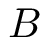. This removes the edge and replaces it with two new edges 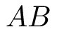 and .
We want to prove that the area of the new hull is the sum of triangles for all 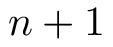 edges. Notice that geometrically no matter how is split, the new polygon is the same as the old one, with the additional consideration of a new triangle where the orientation of this new triangle determines if the triangle is "added" or "removed" from the original hull. This corresponds to how pulling away from adds area, while pushing towards removes area.
As a result, the only aspect of the original polygon that changes is the edge and so the total area is the same as before, but with a change to the area of the triangle 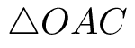
In fact, is no longer used, it has been split up into two new triangles. The new area is then 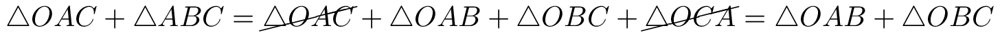
But this is just the area of the triangles of the two new edges, and so this new polygon with edges has an area equal to the sum of triangles and we are done
3D (no proof)
The same idea can be applied to compute the volume of any 3D mesh by iterating over all triangles and accumulating the tetrahedrons 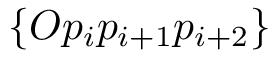. The proof is very similar, we start with a tetrahedron as the base case and show how it can be expanded.